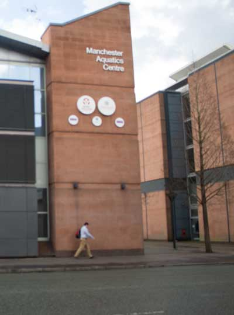
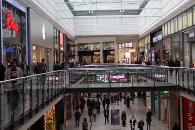

Entertainment
New Student Union
The university has recently invested £10m into building a new Student Union, which opened in September 2014. The new Union contains a shop, bar and nightclub with student friendly prices as well as including a number of social, cultural and sporting activities.
Health and Fitness
Those interesting in health, fitness and sports have a number of facilities around the University campus.
The Aquatics Center has a gym, 50m swimming pool, diving pool and health suite. All of these facilities are available through a studentdiscounted membership.
Sugden Sports Centre also offers a student membership, which would grant access to a gym, sports hall, 3G pitches and more.
Shopping
Manchester is well known nationwide for shopping. As well as the Northern Quarter, there is the Arndale Center in the city center with a diverse range of store, most of which offer student discount. The Trafford Centre is much further away and would require transport. However there is much more to do once there; facilities for food, drink and other forms of entertainment are readily available.
Educational
If you are looking for an inexpensive day out, you can save your money whilst learning when visiting one of Manchester’s many free museums. Here are just a few museums with free entry (Donations welcome):
Industry and Science
Creative exploration of how science, innovation and industry created and sustain modern society.
Manchester Museum
Dinosaurs, mummies and live animals including loads of other great stuff from the natural world and different cultures.
National Football
The world’s greatest football collection - over 140,000 items - including the FIFA Collection.
Manchester Art Gallery
Manchester Art Gallery is one of the country’s finest art museum.
The Wheel of Manchester is located in Piccadilly Gardens. The 60 meter high wheel will cost around £9.00 for general admission but the experience allows you to sit back, relax and enjoy the stunning views above Manchester.
The Northern Quarter is a vibrant and cultural area that begins just a minute’s walk from Piccadilly Gardens. There are numerous bars, cafes, restaurants and shops make the Northern Quarter a great place to visit day or night.
The Printworks is also located in the city center. There are bars, restaurants and a cinema, which together offer a wide range of entertainment options from seeing the latest film to watching a live music performance. The Printworks now host their own fresher’s fair at the beginning of the academic year where students can register for a Student Card, which offers promotions and discounts throughout The Printworks.
The Chill Factoris an indoor ski slope located next to the Trafford Centre, therefore if you are without transport the easiest option is to get a bus to the Trafford Centre. There is a student discount available for any of the snow sport activities which makes it much more attractive and affordable.